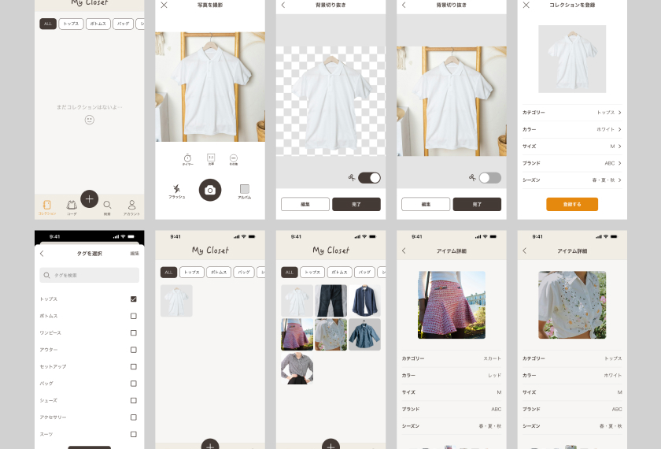
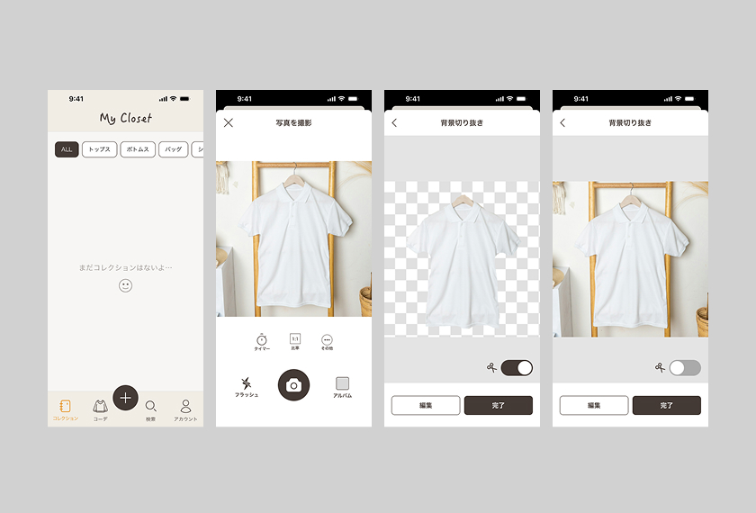
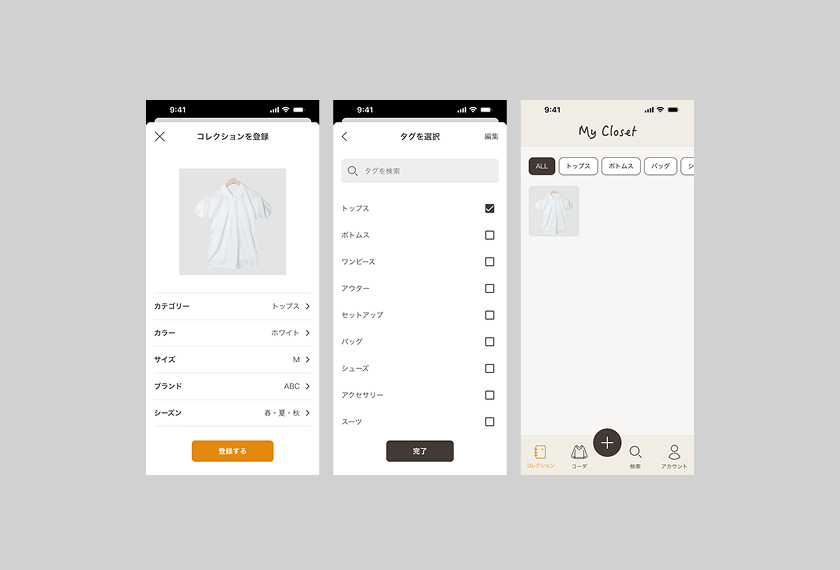
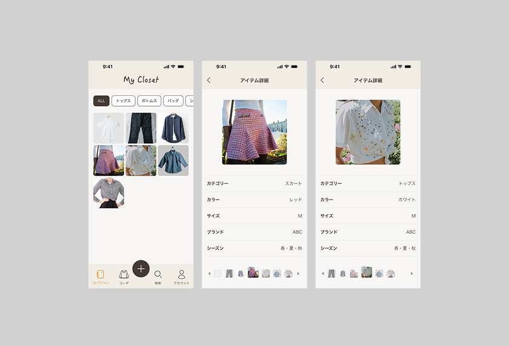

アプリケーション
【概要】
持ってる服をもっと活用するための、クローゼット&コーディネートアプリ。(自主制作)
【想定ユーザー】
洋服が好きな人。持っている服を把握し管理したい。楽しくコレクションしたい。
【想定される利用シーン】
毎朝のコーディネートを考える、洋服を購入する際に所持している服とのコーディネートを考えるなど。
【想定課題】
ユーザーは「自分が何を持っているか把握できていない」「組み合わせを考える負担がある」ため、所有している服を十分に活用できていないのではないか。
【デザイン方針】
所有している服を可視化し、カテゴリーごとにわけることで、お気に入りの服や眠っていた服を活用しやすくする。
【デザインでの工夫】
・シンプルな機能のみに絞り、UIを見やすく導線をわかりやすくするようにした。
・木のクローゼットを連想させる、ベージュのカラーリング。
トップ画面、アイテム追加画面(写真撮影)

詳細編集画面、アイテム追加後画面

トップ画面(アイテム追加後)、アイテム詳細画面

担当領域：設計、デザイン
制作ツール：Figma
制作時間：3日